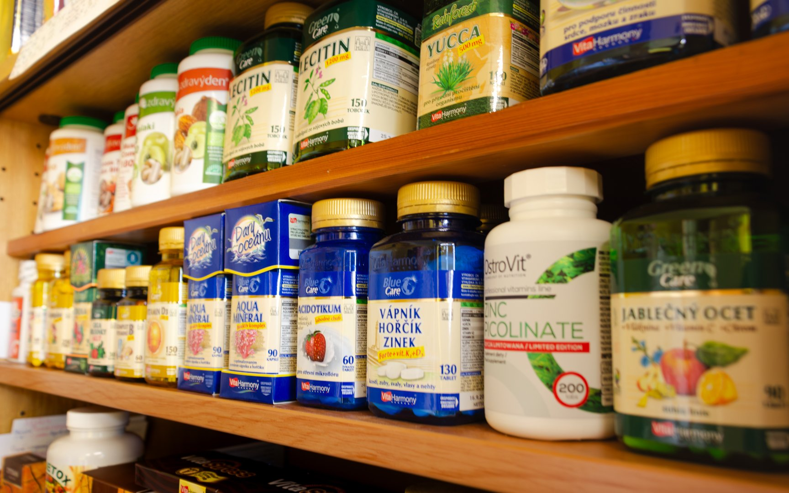
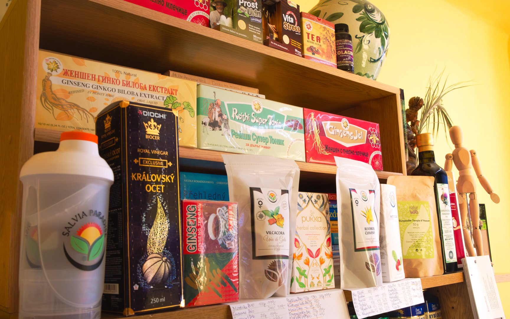

Ve svém studiu nabízím pečlivě vybrané přírodní produkty pro podporu zdraví. Po dlouholetých zkušenostech vím, které doplňky stravy, byliny a oleje skutečně pomáhají.
Po mnoha letech praxe a testování různých přípravků mám sestavený výběr produktů, které opakovaně potvrdily svou účinnost u mých klientů. Pokud máte zájem, rád Vám doporučím konkrétní produkty podle Vaší situace a potřeb.



Vitamíny, minerály, vápník, hořčík, zinek, lecitin, esenciální mastné kyseliny, antioxidanty. Vybíráme značky s ověřenou kvalitou a přírodním složením.
Tradiční české i asijské bylinné směsi pro podporu imunity, trávení, klidného spánku a celkové vitality. Pukka, Sonnentor, Salvia Paradise a další osvědčené značky.
Saloos, Nobilis Tilia — čisté éterické oleje (eukalyptus, rozmarýn, levandule, máta a další) pro aromaterapii, podporu dýchání i přímou aplikaci.
Yamuna Professional Care — kvalitní masážní oleje na rostlinné bázi (bez parafínů). Bio arganový olej, hyaluronové sérum pro péči o pleť.
Královský ocet, Diochi, Reishi, Ženšen Ginkgo Biloba, Yucca, Lecithin a další přírodní extrakty s dlouhou tradicí v přírodní medicíně.
Humátové preparáty pro regenerační detoxikační zábaly a vnitřní použití. Odevzdávají z těla odpadní látky a přispívají k celkové detoxikaci organismu.
Pokud váháte, který produkt zvolit, nabízím individuální konzultaci nad Vaší situací. Mohu provést alternativní analýzu zdravotního stavu přístrojem Supertronic a doporučit nejefektivnější přírodní přípravky na konkrétní oslabení Vašeho těla.
Důležité: Doplňky stravy a přírodní produkty nenahrazují lékařskou péči. Jsou určeny jako podpora zdraví a prevence. Při akutních zdravotních problémech vždy konzultujte svého lékaře.